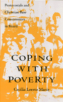

Evangelical religion plays a new role in the lives of Brazil's poor
Evangelical religion plays a new role in the lives of Brazil's poor


 Evangelical religion plays a new role in the lives of Brazil's poor
Evangelical religion plays a new role in the lives of Brazil's poor

|  |
Coping with PovertyPentecostals and Christian Base Communities in BrazilCecília Loreto Marizpaper EAN: 978-1-56639-113-9 (ISBN: 1-56639-113-X) |
"Few studies exist to satisfy the growing demand for solid scholarship on Latin American Protestants. Not only does this author's work fill a void, but it will help set the standards for future studies. This timely book makes an important contribution to our knowledge of the concrete ways in which faith and religious affiliation affect the daily lives of the Latin American poor."
—Hannah Stewart-Gambino, Lehigh University
Only by understanding the enduring poverty of Brazil can one hope to understand the recent growth of Protestant evangelical churches there, Cecília Loreto Mariz contends. Her study investigates how religious groups support individualism and encourage the poor to organize. Groups with shared values are then able to develop strategies to cope with poverty and, ultimately, to transform the social structure.
Interviews with members and leaders of religious groups, accounts of meetings, and close readings of religious literature contribute to a realistic account of Christian base communities and Assembly of God churches, folk Catholic tradition, and Afro Brazilian Spiritism.
Acknowledgments
Introduction
1. Religion in Brazil
2. Coping with Poverty and Religious Affiliation in Brazil
3. A Comparison of Religious Worldviews
4. Material Strategies for Coping with Poverty
5. Political Strategies for Coping with Poverty
6. Cultural Strategies for Coping with Poverty
Conclusion
Notes
References
Index
Cecília Loreto Mariz, a Brazilian national, teaches Sociology at the Universidade Federal de Pernambuco in Recife, Brazil.
Latin American/Caribbean Studies
Sociology
Religion
© 2015 Temple University. All Rights Reserved. This page: http://www.temple.edu/tempress/titles/923_reg.html.